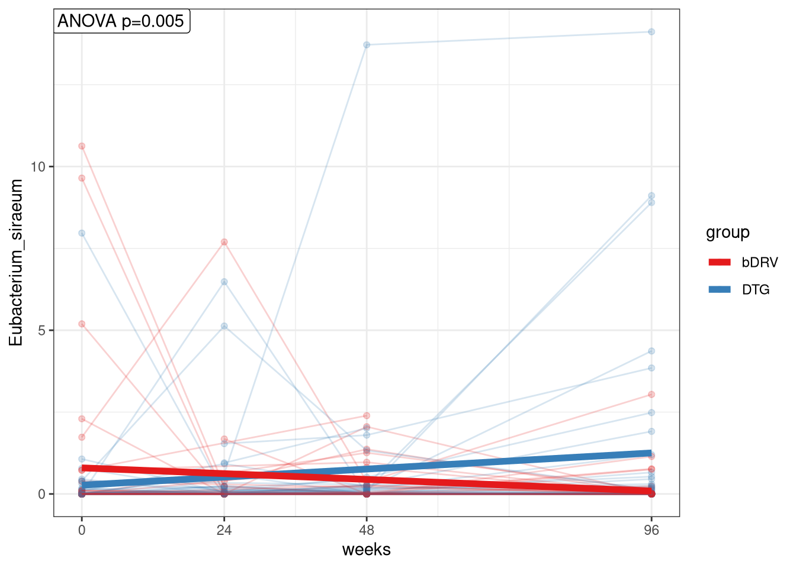
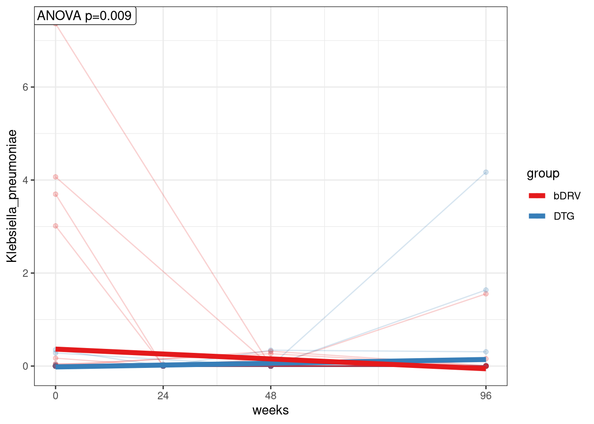

Last updated: 2023-04-18
Checks: 7 0
Knit directory: advanz4/
This reproducible R Markdown analysis was created with workflowr (version 1.7.0). The Checks tab describes the reproducibility checks that were applied when the results were created. The Past versions tab lists the development history.
Great! Since the R Markdown file has been committed to the Git repository, you know the exact version of the code that produced these results.
Great job! The global environment was empty. Objects defined in the global environment can affect the analysis in your R Markdown file in unknown ways. For reproduciblity it’s best to always run the code in an empty environment.
The command set.seed(20211203) was run prior to running the code in the R Markdown file. Setting a seed ensures that any results that rely on randomness, e.g. subsampling or permutations, are reproducible.
Great job! Recording the operating system, R version, and package versions is critical for reproducibility.
Nice! There were no cached chunks for this analysis, so you can be confident that you successfully produced the results during this run.
Great job! Using relative paths to the files within your workflowr project makes it easier to run your code on other machines.
Great! You are using Git for version control. Tracking code development and connecting the code version to the results is critical for reproducibility.
The results in this page were generated with repository version 0aef819. See the Past versions tab to see a history of the changes made to the R Markdown and HTML files.
Note that you need to be careful to ensure that all relevant files for the analysis have been committed to Git prior to generating the results (you can use wflow_publish or wflow_git_commit). workflowr only checks the R Markdown file, but you know if there are other scripts or data files that it depends on. Below is the status of the Git repository when the results were generated:
Ignored files:
Ignored: .RData
Ignored: .Rhistory
Ignored: .Rproj.user/
Ignored: analysis/.Rhistory
Ignored: analysis/420_Taxonomy_DA_cache/
Ignored: analysis/505_Adenovirus_Analysis_cache/
Ignored: analysis/510_Function_DA_cache/
Ignored: data/mre.rds
Unstaged changes:
Modified: analysis/250_BL_stratification.Rmd
Deleted: analysis/250_BL_stratification.html
Modified: analysis/315_GeneRichness_vs_CD4.Rmd
Modified: analysis/317_GeneRichness_vs_Inflammation.Rmd
Modified: analysis/335_BLMicrobiome_vs_ImmuneResponse.Rmd
Modified: analysis/420_Taxonomy_DA.Rmd
Modified: analysis/_site.yml
Modified: code/group_comparisons.R
Modified: output/figures/GR_group_boxplots.svg
Modified: output/figures/LMMs_GR.svg
Modified: output/figures/LMMs_GRrel.svg
Modified: output/figures/inflammation.svg
Modified: output/figures/recovery_grid.svg
Modified: output/figures/richness_reconstitution.svg
Modified: output/figures/richness_reconstitution_relative.svg
Modified: output/general_boxplot_stats
Modified: output/mre_data/CatalogMapping/IGC/lmm/lmm_time_point_by_group.pdf
Modified: output/mre_data/SpeciesQuantification/Metaphlan3/NMDS/Species/bray_stressplot.pdf
Modified: output/mre_data/SpeciesQuantification/Metaphlan3/NMDS/Species/categorical_nmds_CD4after_48.pdf
Modified: output/mre_data/SpeciesQuantification/Metaphlan3/NMDS/Species/categorical_nmds_CD4after_96.pdf
Modified: output/mre_data/SpeciesQuantification/Metaphlan3/NMDS/Species/categorical_nmds_CD4diff_48.pdf
Modified: output/mre_data/SpeciesQuantification/Metaphlan3/NMDS/Species/categorical_nmds_CD4diff_96.pdf
Modified: output/mre_data/SpeciesQuantification/Metaphlan3/NMDS/Species/categorical_nmds_CD8after_48.pdf
Modified: output/mre_data/SpeciesQuantification/Metaphlan3/NMDS/Species/categorical_nmds_CD8after_96.pdf
Modified: output/mre_data/SpeciesQuantification/Metaphlan3/NMDS/Species/categorical_nmds_CD8diff_48.pdf
Modified: output/mre_data/SpeciesQuantification/Metaphlan3/NMDS/Species/categorical_nmds_CD8diff_96.pdf
Modified: output/mre_data/SpeciesQuantification/Metaphlan3/NMDS/Species/categorical_nmds_center.pdf
Modified: output/mre_data/SpeciesQuantification/Metaphlan3/NMDS/Species/categorical_nmds_cluster.pdf
Modified: output/mre_data/SpeciesQuantification/Metaphlan3/NMDS/Species/categorical_nmds_ethnic_group.pdf
Modified: output/mre_data/SpeciesQuantification/Metaphlan3/NMDS/Species/categorical_nmds_gender.pdf
Modified: output/mre_data/SpeciesQuantification/Metaphlan3/NMDS/Species/categorical_nmds_group.pdf
Modified: output/mre_data/SpeciesQuantification/Metaphlan3/NMDS/Species/categorical_nmds_risk_group.pdf
Modified: output/mre_data/SpeciesQuantification/Metaphlan3/NMDS/Species/cluster_categorical_nmds_CD4after_48.pdf
Modified: output/mre_data/SpeciesQuantification/Metaphlan3/NMDS/Species/cluster_categorical_nmds_CD4after_96.pdf
Modified: output/mre_data/SpeciesQuantification/Metaphlan3/NMDS/Species/cluster_categorical_nmds_CD4diff_48.pdf
Modified: output/mre_data/SpeciesQuantification/Metaphlan3/NMDS/Species/cluster_categorical_nmds_CD4diff_96.pdf
Modified: output/mre_data/SpeciesQuantification/Metaphlan3/NMDS/Species/cluster_categorical_nmds_CD8after_48.pdf
Modified: output/mre_data/SpeciesQuantification/Metaphlan3/NMDS/Species/cluster_categorical_nmds_CD8after_96.pdf
Modified: output/mre_data/SpeciesQuantification/Metaphlan3/NMDS/Species/cluster_categorical_nmds_CD8diff_48.pdf
Modified: output/mre_data/SpeciesQuantification/Metaphlan3/NMDS/Species/cluster_categorical_nmds_CD8diff_96.pdf
Modified: output/mre_data/SpeciesQuantification/Metaphlan3/NMDS/Species/cluster_categorical_nmds_center.pdf
Modified: output/mre_data/SpeciesQuantification/Metaphlan3/NMDS/Species/cluster_categorical_nmds_ethnic_group.pdf
Modified: output/mre_data/SpeciesQuantification/Metaphlan3/NMDS/Species/cluster_categorical_nmds_gender.pdf
Modified: output/mre_data/SpeciesQuantification/Metaphlan3/NMDS/Species/cluster_categorical_nmds_group.pdf
Modified: output/mre_data/SpeciesQuantification/Metaphlan3/NMDS/Species/cluster_categorical_nmds_risk_group.pdf
Modified: output/mre_data/SpeciesQuantification/Metaphlan3/NMDS/Species/cluster_numeric_nmds_ADV.pdf
Modified: output/mre_data/SpeciesQuantification/Metaphlan3/NMDS/Species/cluster_numeric_nmds_CD4.pdf
Modified: output/mre_data/SpeciesQuantification/Metaphlan3/NMDS/Species/cluster_numeric_nmds_CD8.pdf
Modified: output/mre_data/SpeciesQuantification/Metaphlan3/NMDS/Species/cluster_numeric_nmds_CD8_CD38_DR.pdf
Modified: output/mre_data/SpeciesQuantification/Metaphlan3/NMDS/Species/cluster_numeric_nmds_CRP.pdf
Modified: output/mre_data/SpeciesQuantification/Metaphlan3/NMDS/Species/numeric_nmds_ADV.pdf
Modified: output/mre_data/SpeciesQuantification/Metaphlan3/NMDS/Species/numeric_nmds_CD4.pdf
Modified: output/mre_data/SpeciesQuantification/Metaphlan3/NMDS/Species/numeric_nmds_CD8.pdf
Modified: output/mre_data/SpeciesQuantification/Metaphlan3/NMDS/Species/numeric_nmds_CD8_CD38_DR.pdf
Modified: output/mre_data/SpeciesQuantification/Metaphlan3/NMDS/Species/numeric_nmds_CRP.pdf
Modified: output/mre_data/SpeciesQuantification/Metaphlan3/NMDS/Species/silhouette_plt.pdf
Modified: output/overall_pvals.csv
Modified: output/poster_boxplots.svg
Note that any generated files, e.g. HTML, png, CSS, etc., are not included in this status report because it is ok for generated content to have uncommitted changes.
These are the previous versions of the repository in which changes were made to the R Markdown (analysis/330_TaxaLevel_LMM.Rmd) and HTML (docs/330_TaxaLevel_LMM.html) files. If you’ve configured a remote Git repository (see ?wflow_git_remote), click on the hyperlinks in the table below to view the files as they were in that past version.
| File | Version | Author | Date | Message |
|---|---|---|---|---|
| Rmd | ec0749d | cblazquez | 2023-03-13 | Added BMI tests for week 24 |
| html | ec0749d | cblazquez | 2023-03-13 | Added BMI tests for week 24 |
| html | 40fda18 | cblazquez | 2023-03-10 | Readded delta BMI vs GR |
| html | 3fa20ba | cblazquez | 2022-06-02 | Added species v inflammation |
| html | 2a1fe84 | cblazquez | 2022-04-28 | Fixed rmd integration to wflow_build() |
| Rmd | 397dd35 | cblazquez | 2022-04-04 | Fixed filtering problem in new version of metadata |
| html | 397dd35 | cblazquez | 2022-04-04 | Fixed filtering problem in new version of metadata |
| Rmd | c20090b | cblazquez | 2022-04-01 | Compiled taxa ranking html + several bug fixes |
| html | c20090b | cblazquez | 2022-04-01 | Compiled taxa ranking html + several bug fixes |
| Rmd | e4615e7 | cblazquez | 2022-04-01 | First somewhat functional draft for TaxaLevel_LMM.Rmd |
| html | e4615e7 | cblazquez | 2022-04-01 | First somewhat functional draft for TaxaLevel_LMM.Rmd |
| Rmd | 532dfdf | Marc Noguera-Julian | 2022-03-29 | change ordinal |
knitr::opts_chunk$set(echo = TRUE)
knitr::opts_knit$set(root.dir = here::here())get_LMM_GraphParams <- function(Table) {
myList <- Table %>%
filter(!is.na(cat_var)) %>%
pull(cat_var) %>%
unique() %>%
set_names() %>%
map_dfr(~ {
innerTable <- Table %>%
dplyr::select(num_var, long_var, cat_var, id_var) %>%
dplyr::filter(cat_var == .x)
if(sum(innerTable$num_var) == 0){ ## Check num var to not be all 0s, otherwise the lme function will fall apart.
graphparams <- Table %>%
summarise(
xmin = min(long_var),
xmax = max(long_var),
ymin = 0,
ymax = 0
) %>%
mutate(cat_var = .x) %>%
relocate(cat_var)
} else if(length(unique(innerTable$id_var)) < 2){
graphparams <- Table %>%
summarise(
xmin = min(long_var),
xmax = max(long_var),
ymin = min(num_var),
ymax = max(num_var)
) %>%
mutate(cat_var = .x) %>%
relocate(cat_var)
} else {
model <-
lmerTest::lmer(formula = "num_var ~ long_var + (1|id_var)", innerTable) %>%
summary() %>%
magrittr::extract2("coefficients")
graphparams <- Table %>%
summarise(
xmin = min(long_var),
xmax = max(long_var),
ymin = model[1, 1] + xmin * model[2, 1],
ymax = model[1, 1] + xmax * model[2, 1]
) %>%
mutate(cat_var = .x) %>%
relocate(cat_var)
}
}) %>%
as.data.frame()
return(myList)
}The main purpose of this script is to extract signals from Linear-Mixed-Models(LMM) from longitudinal designs of data. For each Taxa, at a tax_level, we’ll run a LMM through the longitudinal dimension and either, rank taxa according to their longitudinal increase/decrease or to the highest differences between a group variable in cat_var.
Try different data transformation approaches:
require(phyloseq)
require(ggstatsplot)
require(ggplot2)
require(here)
library(metar)suggested package selbal ✔suggested package DataExplorer ✔suggested package lme4 ✔suggested package merTools ✔library(tidyverse)
bucket<-"s3://mistral-wp6-advanz4/"
bucketDir<-"metagenome/WMGS"
# Load package from local copy
devtools::load_all(here::here("..","WMGSPipeline"))### Change to require/library/load local packagesuggested package selbal ✔suggested package DataExplorer ✔suggested package lme4 ✔suggested package merTools ✔mymre <- readRDS(here::here("data", "mre.rds"))
# mymre<-aws.s3::s3readRDS(bucket=bucket,object = paste0(bucketDir,"/MREObject.rds")) ## Change as needed
# mymre@metadata@categorical_vals <-
# here::here("Metadata","CategoricalVariables.txt") %>%
# read.table(sep="\t") %>%
# setNames(c("CategoricalVariable","PaletteName")) %>%
# as_tibble()
phy <- metar::get_phyloseq(mymre, type="metaphlan")
id_var <- "record_id"
long_var <- "time_point"
cat_df <- metar::get_cat(mymre) %>%
filter(!CategoricalVariable == "CD4diff_96")
cat_vector <- cat_df$CategoricalVariable
metadata <-
here::here("Metadata") %>%
list.files(pattern = "clean_metadata", full.names = T) %>%
file.info() %>%
dplyr::arrange(desc(ctime)) %>%
rownames() %>%
dplyr::first() %>%
read.csv()
## Remove patients with <2 samples, this is temporal
selectedIds <- metadata %>%
select(SampleID, record_id) %>%
group_by(record_id) %>%
summarise(n = n()) %>%
filter(n >= 2) %>%
pull(record_id)
metadata <- metadata %>%
filter(record_id %in% selectedIds)
abundance <-
metar:::get_merged_df(phy, tax_level="Species",sample_data_df = F) %>%
full_join(
metadata[,c("SampleID",id_var,long_var, cat_vector)], by="SampleID") %>%
dplyr::rename(id_var = !!sym(id_var),
long_var = !!sym(long_var))num_vector <- abundance %>%
dplyr::select(-id_var, -cat_vector, -long_var, -SampleID) %>%
colnames()
get_multiLMM_table <- function(df,num_vector, sam_var, cat_vector, long_var, id_var){
myUnifiedModelList <- cat_vector %>%
set_names() %>%
map(function(cat_var) {
# print(cat_var)
num_vector %>%
set_names() %>%
map_dfr(function(num_var) {
dat <-
df %>%
select(sam_var, id_var, long_var, cat_var, num_var) %>%
dplyr::rename(num_var = !!sym(num_var),
cat_var = !!sym(cat_var))
cat_levels <- #Count nº of levels in cat_var
dat %>%
dplyr::select(id_var, cat_var) %>%
unique() %>%
dplyr::group_by(cat_var) %>%
dplyr::summarize(n=n()) %>%
dplyr::filter(n>1,
!is.na(cat_var)) %>%
dplyr::pull(cat_var)
dat <- # filter NAs and bad entries
dat %>%
dplyr::filter(cat_var %in% cat_levels,
!is.na(cat_var))
if (length(!is.na(cat_levels)) >= 2){ # Check if cat_var has at least 2 levels
myUnifiedModel <-
lmerTest::lmer(formula = "num_var ~ long_var * cat_var + (1|id_var)", data = dat)
finalTable <-
anova(myUnifiedModel) %>%
# magrittr::extract2("coefficients") %>%
as.data.frame() %>%
tibble::rownames_to_column(var = "term") %>%
dplyr::filter(term == "long_var:cat_var") %>%
magrittr::set_names(c("term","SumSq", "MeanSq", "df", "DenDF", "Fval","pval")) %>%
dplyr::mutate(pval = round(pval, 3)) %>%
mutate(term = num_var) %>%
rename(Species = term)
return(finalTable)
} else {return(NA)}
})
})
}
taxa_ranks <- get_multiLMM_table(df = abundance,
num_vector = num_vector,
sam_var = "SampleID",
cat_vector = cat_vector,
long_var = long_var,
id_var = id_var)
signifDF <- taxa_ranks$group %>%
arrange(desc(Fval)) %>%
mutate(padj = p.adjust(pval, method= "fdr")) %>%
filter(pval < 0.01)As this was a proper LMM using cat_var as fixed effect, we can’t get an overall “slope”, as the model computes an estimate for each cat_var level. Hence, as a proxy for effect size we’ll ANOVA F-statistic which is calculated as the division betwen inter-group mean variance and intra-group variance. From the significant species we’ll be able to greatly reduce the table so we can comfortably estimate slopes for each one.
By looking at group test statistic, we see a few species with a significant time:group interaction, which becomes unsignificant even with a permisive fdr correction.
taxaRank_plotlists <- function(rankdf, otus, cat_var){
rankdf %>%
pull(Species) %>%
set_names() %>%
map(function(sp) {
sp
dat <-
otus %>%
dplyr::filter(!is.na(!!sym(cat_var))) %>%
select(num_var = sp,
cat_var = !!sym(cat_var),
id_var,
long_var)
model <- dat %>%
lmerTest::lmer(formula = "num_var ~ long_var * cat_var + (1|id_var)", data = .)
myGraphParams <- dat %>%
get_LMM_GraphParams() %>%
mutate(across(contains("x"), ~ as.numeric(.x)))
myPval <-
anova(model) %>%
# magrittr::extract2("coefficients") %>%
as.data.frame() %>%
dplyr::slice(3L) %>%
magrittr::set_names(c("SumSq", "MeanSq", "df", "DenDF", "Fval", "pval")) %>%
dplyr::mutate(pval = round(pval, 3))
myplot <- dat %>%
ggplot(.,
aes(
x = long_var,
y = num_var,
group = id_var,
color = cat_var
)) +
geom_point(alpha = 0.2) +
geom_line(alpha = 0.2) +
scale_x_continuous(breaks = unique(dat$long_var),
limits = c(min(dat$long_var),
max(dat$long_var))) +
geom_segment(
data = myGraphParams,
aes(
x = xmin,
y = ymin,
xend = xmax,
yend = ymax,
color = cat_var
),
inherit.aes = T,
size = 2
) +
scale_color_brewer(palette = "Set1") +
labs(color = cat_var,
x = "weeks",
y = sp) +
geom_label(
data = myPval,
aes(
alpha = NULL,
label = paste("ANOVA p=",
pval,
sep = ""),
x = -Inf,
y = Inf
),
color = "black",
hjust = 0.01,
vjust = 1
) +
theme_bw()
})
}
plot_list <- cat_vector %>%
set_names() %>%
map(function(cat) {
cat_var <- cat
taxaRank_plotlists(rankdf = signifDF,otus = abundance, cat_var = cat)
})
plot_list$group$Eubacterium_siraeum
$Parabacteroides_sp_CAG_409
$Klebsiella_pneumoniae
sessionInfo()R version 4.0.5 (2021-03-31)
Platform: x86_64-redhat-linux-gnu (64-bit)
Running under: Fedora 34 (Workstation Edition)
Matrix products: default
BLAS/LAPACK: /usr/lib64/libflexiblas.so.3.1
locale:
[1] LC_CTYPE=en_US.UTF-8 LC_NUMERIC=C
[3] LC_TIME=en_US.UTF-8 LC_COLLATE=en_US.UTF-8
[5] LC_MONETARY=en_US.UTF-8 LC_MESSAGES=en_US.UTF-8
[7] LC_PAPER=en_US.UTF-8 LC_NAME=C
[9] LC_ADDRESS=C LC_TELEPHONE=C
[11] LC_MEASUREMENT=en_US.UTF-8 LC_IDENTIFICATION=C
attached base packages:
[1] stats graphics grDevices utils datasets methods base
other attached packages:
[1] metar_0.1.5 testthat_3.1.4 forcats_0.5.1 stringr_1.4.0
[5] dplyr_1.0.9 purrr_0.3.4 readr_2.1.2 tidyr_1.2.0
[9] tibble_3.1.7 tidyverse_1.3.1 here_1.0.1 ggplot2_3.3.6
[13] ggstatsplot_0.9.3 phyloseq_1.34.0 devtools_2.4.3 usethis_2.1.6
[17] workflowr_1.7.0
loaded via a namespace (and not attached):
[1] estimability_1.3 coda_0.19-4
[3] bit64_4.0.5 knitr_1.39
[5] DelayedArray_0.16.3 multcomp_1.4-19
[7] wesanderson_0.3.6 data.table_1.14.2
[9] DataExplorer_0.8.2 RCurl_1.98-1.7
[11] generics_0.1.2 BiocGenerics_0.36.1
[13] callr_3.7.0 TH.data_1.1-1
[15] mixOmics_6.14.1 future_1.26.1
[17] correlation_0.8.1 bit_4.0.4
[19] tzdb_0.3.0 xml2_1.3.2
[21] lubridate_1.8.0 httpuv_1.6.5
[23] SummarizedExperiment_1.20.0 assertthat_0.2.1
[25] xfun_0.31 hms_1.1.1
[27] jquerylib_0.1.4 evaluate_0.15
[29] promises_1.2.0.1 fansi_1.0.3
[31] dbplyr_2.2.0 readxl_1.4.0
[33] igraph_1.3.2 DBI_1.1.3
[35] htmlwidgets_1.5.4 rARPACK_0.11-0
[37] stats4_4.0.5 paletteer_1.4.0
[39] ellipsis_0.3.2 RSpectra_0.16-1
[41] ggpubr_0.4.0 backports_1.4.1
[43] insight_0.17.1 permute_0.9-7
[45] libcoin_1.0-9 MatrixGenerics_1.2.1
[47] vctrs_0.4.1 Biobase_2.50.0
[49] remotes_2.4.2 Cairo_1.5-12.2
[51] abind_1.4-5 cachem_1.0.6
[53] withr_2.5.0 ggforce_0.3.3
[55] vroom_1.5.7 emmeans_1.7.4-1
[57] vegan_2.6-2 prettyunits_1.1.1
[59] cluster_2.1.3 ape_5.6-2
[61] crayon_1.5.1 ellipse_0.4.3
[63] labeling_0.4.2 pkgconfig_2.0.3
[65] tweenr_1.0.2 GenomeInfoDb_1.26.7
[67] nlme_3.1-158 statsExpressions_1.3.2
[69] pkgload_1.2.4 blme_1.0-5
[71] rlang_1.0.2 globals_0.15.0
[73] lifecycle_1.0.1 sandwich_3.0-2
[75] selbal_0.1.0 modelr_0.1.8
[77] cellranger_1.1.0 rprojroot_2.0.3
[79] polyclip_1.10-0 matrixStats_0.62.0
[81] datawizard_0.4.1 Matrix_1.4-1
[83] carData_3.0-5 Rhdf5lib_1.12.1
[85] boot_1.3-28 zoo_1.8-10
[87] reprex_2.0.1 whisker_0.4
[89] GlobalOptions_0.1.2 processx_3.6.1
[91] png_0.1-7 rjson_0.2.21
[93] parameters_0.18.1 bitops_1.0-7
[95] getPass_0.2-2 pROC_1.18.0
[97] rhdf5filters_1.2.1 Biostrings_2.58.0
[99] shape_1.4.6 coin_1.4-2
[101] arm_1.12-2 parallelly_1.32.0
[103] lefser_1.0.0 rstatix_0.7.0
[105] S4Vectors_0.28.1 ggsignif_0.6.3.9000
[107] scales_1.2.0 memoise_2.0.1
[109] magrittr_2.0.3 plyr_1.8.7
[111] zlibbioc_1.36.0 compiler_4.0.5
[113] RColorBrewer_1.1-3 clue_0.3-61
[115] lme4_1.1-29 cli_3.3.0
[117] ade4_1.7-19 XVector_0.30.0
[119] lmerTest_3.1-3 listenv_0.8.0
[121] patchwork_1.1.1 ps_1.7.1
[123] ggside_0.2.0 MASS_7.3-57
[125] mgcv_1.8-40 tidyselect_1.1.2
[127] stringi_1.7.6 highr_0.9
[129] yaml_2.3.5 ggrepel_0.9.1
[131] grid_4.0.5 sass_0.4.1
[133] tools_4.0.5 parallel_4.0.5
[135] circlize_0.4.15 rstudioapi_0.13
[137] foreach_1.5.2 logging_0.10-108
[139] git2r_0.30.1 gridExtra_2.3
[141] farver_2.1.0 digest_0.6.29
[143] shiny_1.7.1 networkD3_0.4
[145] Rcpp_1.0.8.3 GenomicRanges_1.42.0
[147] car_3.1-0 broom_0.8.0
[149] performance_0.9.1 later_1.3.0
[151] httr_1.4.2 ComplexHeatmap_2.6.2
[153] colorspace_2.0-3 rvest_1.0.2
[155] brio_1.1.3 fs_1.5.2
[157] IRanges_2.24.1 splines_4.0.5
[159] rematch2_2.1.2 multtest_2.46.0
[161] sessioninfo_1.2.2 xtable_1.8-4
[163] jsonlite_1.8.0 nloptr_2.0.3
[165] corpcor_1.6.10 zeallot_0.1.0
[167] modeltools_0.2-23 R6_2.5.1
[169] broom.mixed_0.2.9.4 pillar_1.7.0
[171] htmltools_0.5.2 mime_0.12
[173] BiocParallel_1.24.1 glue_1.6.2
[175] fastmap_1.1.0 minqa_1.2.4
[177] codetools_0.2-18 pkgbuild_1.3.1
[179] mvtnorm_1.1-3 furrr_0.3.0
[181] utf8_1.2.2 lattice_0.20-45
[183] bslib_0.3.1 logger_0.2.2
[185] numDeriv_2016.8-1.1 survival_3.3-1
[187] rmarkdown_2.14 desc_1.4.1
[189] biomformat_1.18.0 merTools_0.5.2
[191] munsell_0.5.0 GetoptLong_1.0.5
[193] rhdf5_2.34.0 GenomeInfoDbData_1.2.4
[195] iterators_1.0.14 haven_2.5.0
[197] reshape2_1.4.4 gtable_0.3.0
[199] bayestestR_0.12.1